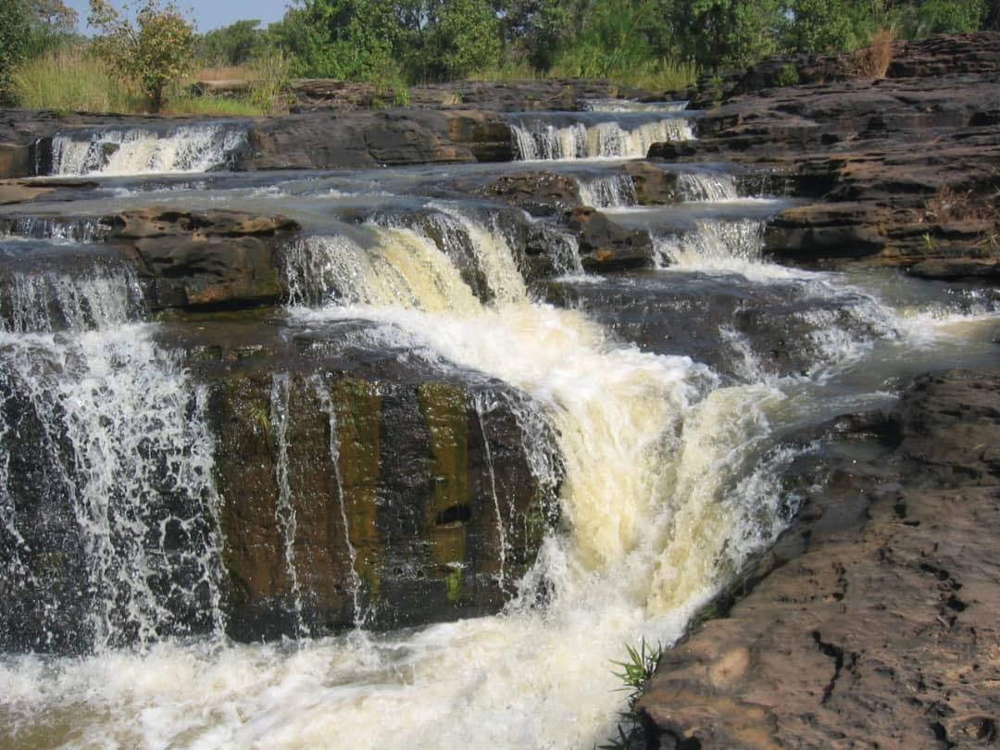
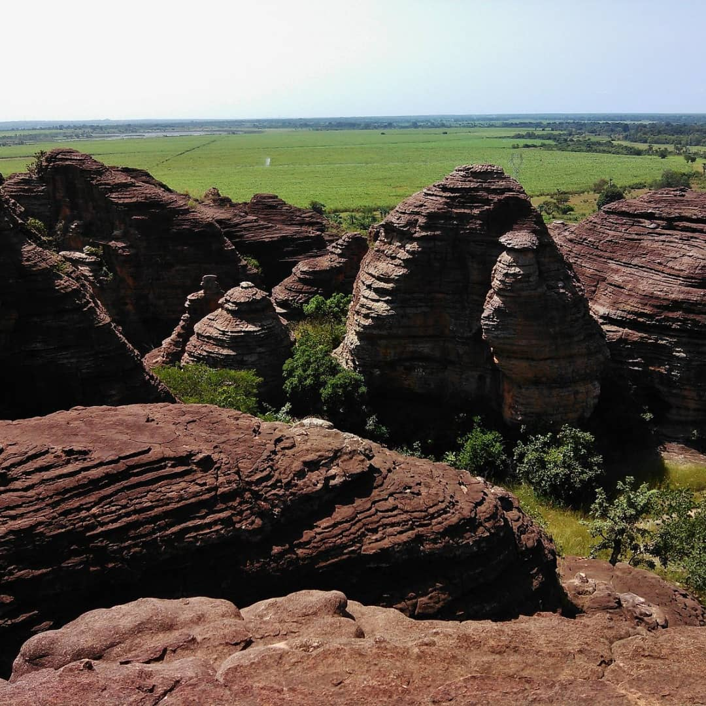
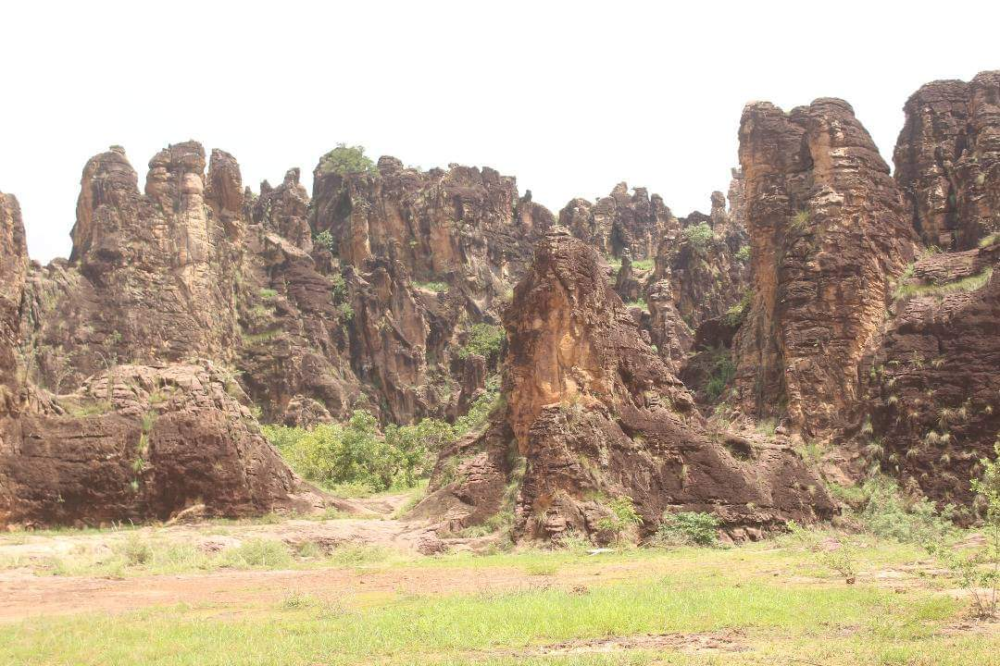
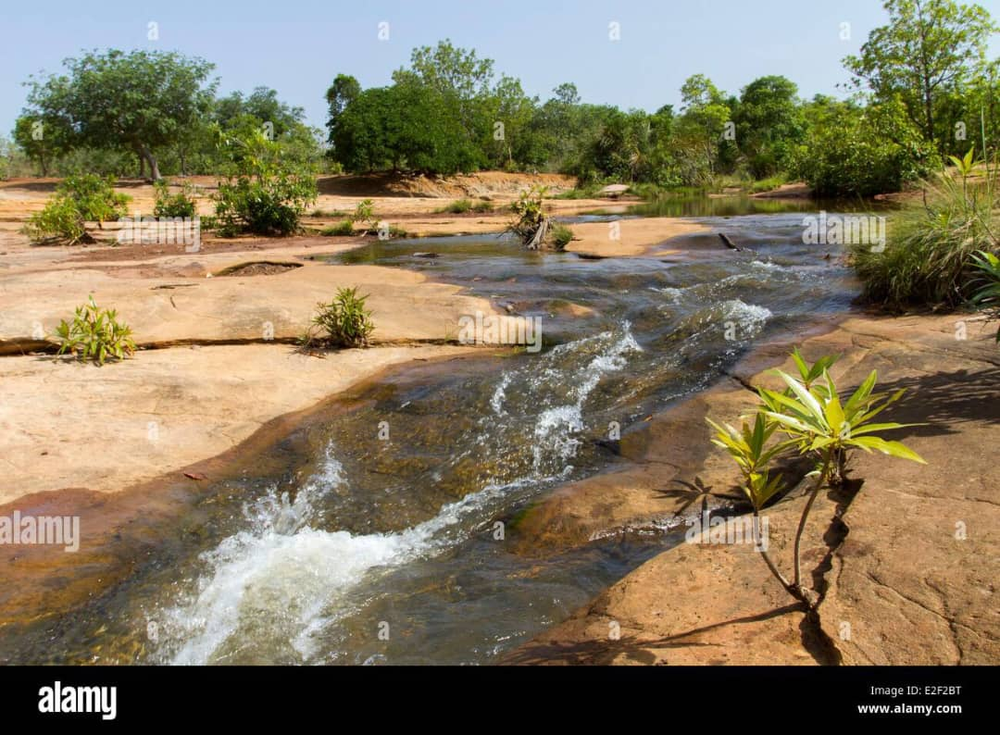

Sites Patrimoniaux
-
cascades de banfora
voir plus Situées à environ 12 km au nord-ouest de Banfora, elles tiennent leur nom de la commune de Karfiguéla. Elles constituent l'un des sites touristiques les plus importants au Burkina Faso. La région des Cascades tire son nom de ces chutes d'eau. Banfora, ville frontalière de la Côte d’Ivoire dispose d’un climat doux et d’une végétation comparable à celle des pays côtiers permettant de le nommé sans en abuser la Côte d’Azur du Burkina. Mais au sommet d’une colline, se laissent admirer les fameuses cascades qui font la fierté de tout Banfora. Les cascades de Karfiguéla ou cascades de Banfora sont une série de cascades le long du fleuve Comoé au sud-ouest du Burkina Faso. Elles sont situées à environ 12 km au nord-ouest de Banfora et constituent l’un des sites touristiques les plus importants au Burkina Faso. La région des Cascades tire son nom de ces cascades. Dans la chaleur de ce mois de mai, entendre le son de l’eau qui coule au loin est en soi une délivrance. Une dizaine de baignoires naturelles et de bains à remous remplis d’une eau limpide et glacée vous y attendent. La visite des lieux est payante : 1000F CFA pour les étrangers et 500F CFA pour les visit
-
Les dômes de Fabédougou
voir plus Les dômes de Fabédougou sont de véritables édifices de plusieurs mètres de haut construits par la nature. Situés à une quinzaine de kilomètres de la ville de Banfora, les dômes de Fabédougou se laissent grimper avec plaisir. Le dôme est défini par le dictionnaire comme un sommet semi-sphérique de certains édifices, en forme de coupole. Au sommet de ces dômes de Fabédougou, s’offre une vue panoramique des champs de canne à sucre et l’abondante végétation présente dans cette partie du Burkina Faso. Pour aller sur les dômes il est nécessaire de porter des paires de chaussures adaptées au terrain, être en tenue de sport de préférence afin de faciliter les mouvements de grimpée des dômes. En plus, l’accès au site est conditionné par le versement auprès de l’agent de l’Office national du tourisme burkinabè (ONTB), la somme de cinq cents francs (500) pour les nationaux et mille francs (1000F) CFA pour les étrangers.
-
les pics de sindou
voir plus Les pics de Sindou ou aiguilles de Sindou sont une formation rocheuse de grès, aux parois abruptes et fortement érodées dans le Sud-Ouest du Burkina Faso. Ils culminent à 415 mètres d'altitude1, ce qui en fait le deuxième point le plus haut du Burkina Faso. Ces pics sont une des attractions touristiques les plus populaires du pays. Une partie du site est accessible aux touristes par des sentiers pédestres2. Plusieurs points d'observation sont aménagés sur les sommets. L'accès des visiteurs du parc se fait par un parking, d'où partent les sentiers au sud des pics, accessible par la route régionale 21 au sud-est de la ville de Sindou.
-
le lac tengrela
voir plus Le lac de Tengréla ou (Tangréla, Tingréla) est un lac du Burkina Faso situé sur le territoire de la localité de Tengréla dans le département de Banfora et la région des Cascades au sud-ouest du pays. D'une longueur de 7 km et d'une largeur de 1 km maximales, le lac a une superficie de 580 ha. Son émissaire rejoint la Comoé à leur confluence située à environ 3 km au sud-est. Le lac est protégé par la convention de Ramsar depuis le 7 octobre 2001.